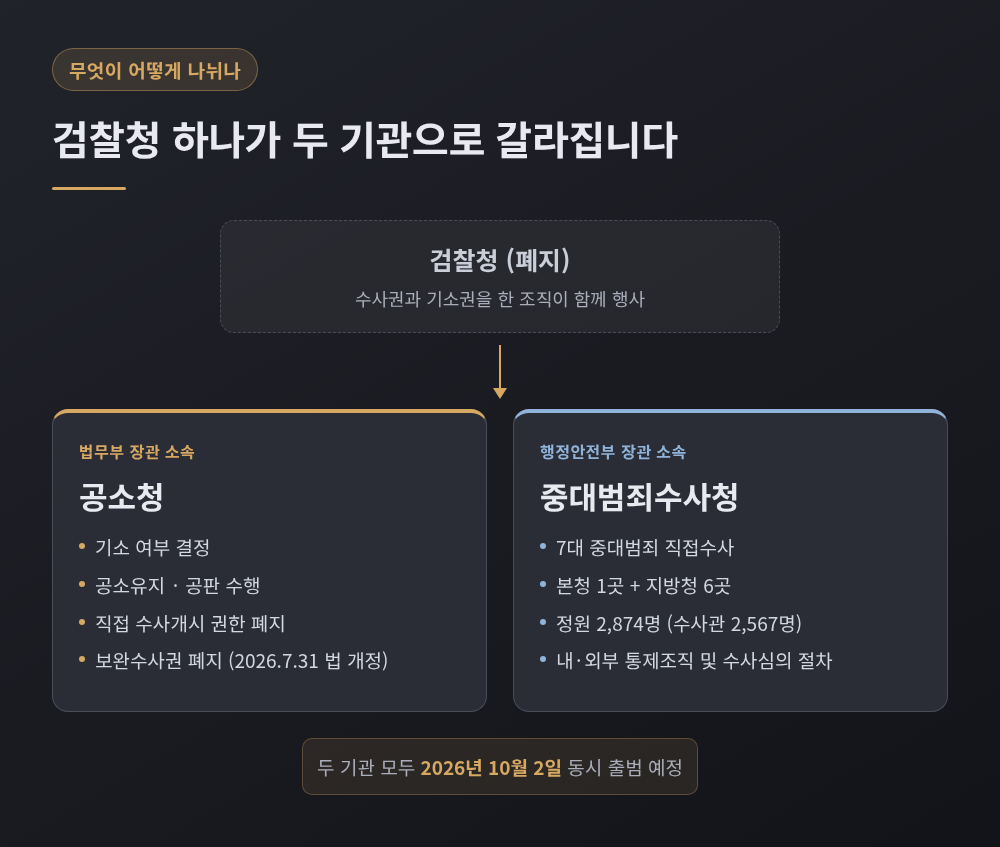
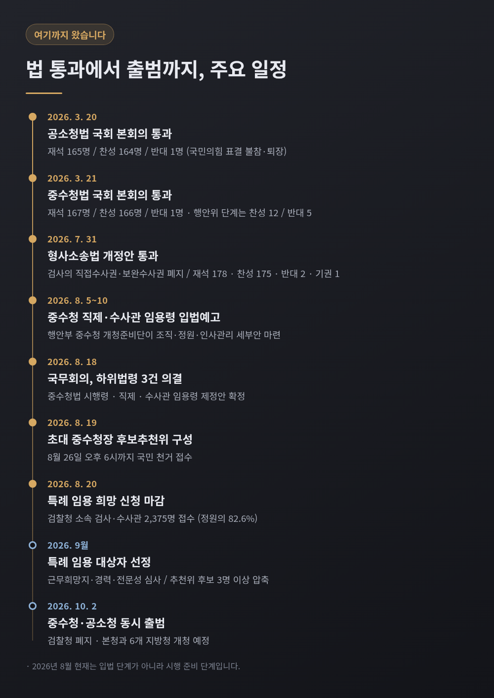
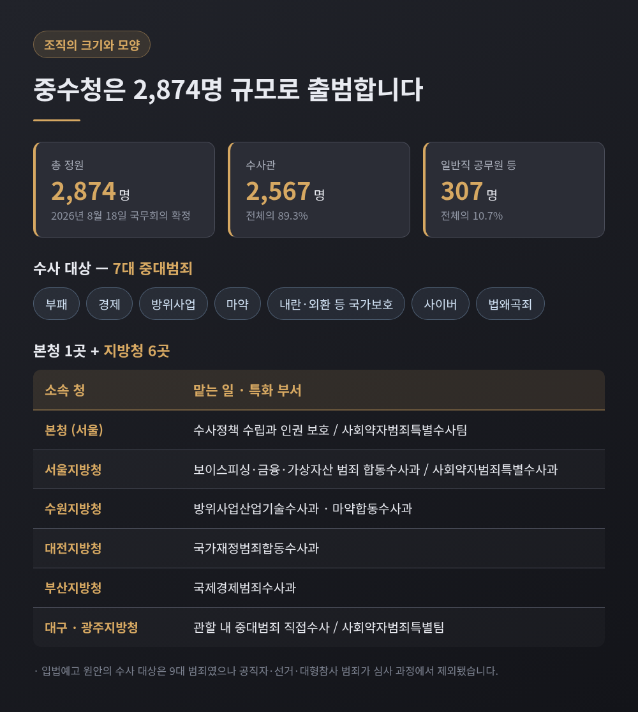
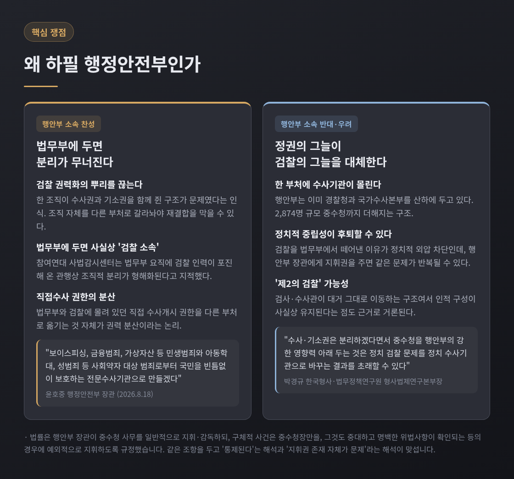
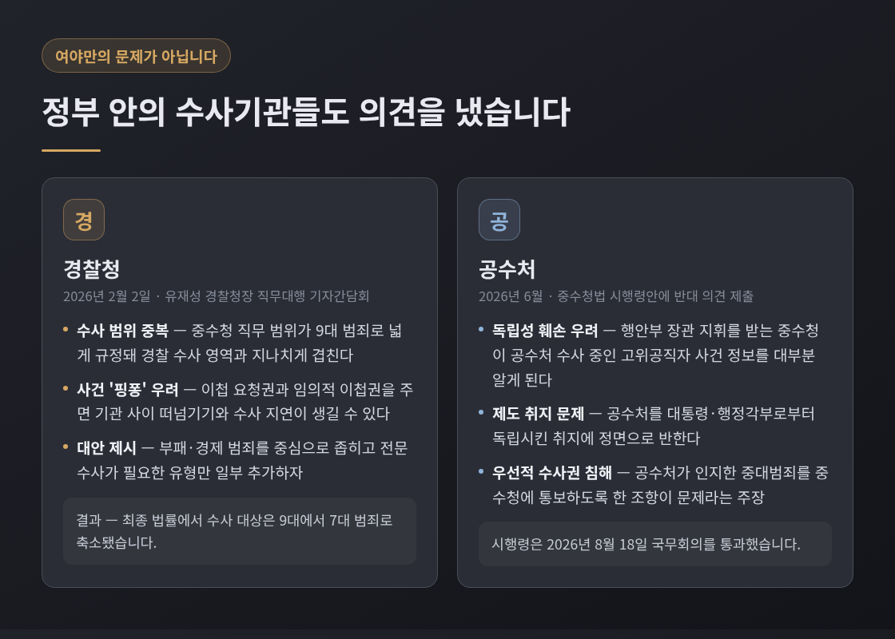
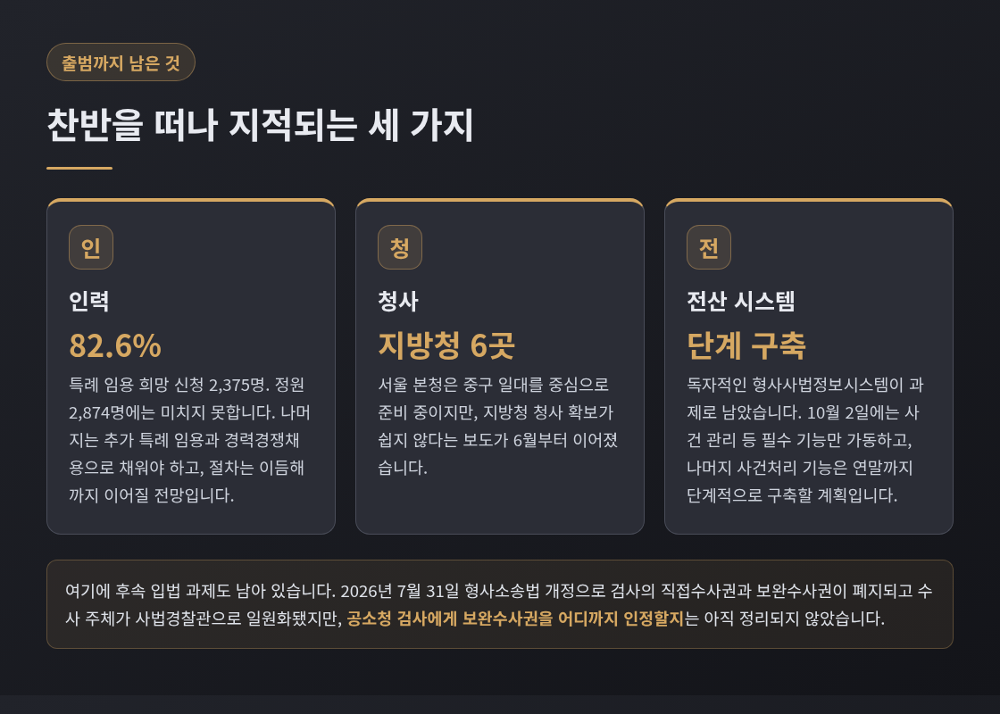

2026년 10월 2일 중대범죄수사청, 줄여서 중수청이 문을 엽니다. 검찰이 쥐고 있던 수사 기능을 떼어내 행정안전부 소속 기관으로 옮기는 개편입니다. 이 글에서는 중수청이 어떤 조직인지, 8월 현재 어디까지 준비됐는지, 그리고 '왜 하필 행정안전부인가'를 두고 어떤 주장들이 맞서고 있는지를 순서대로 정리하겠습니다.
중수청은 아직 만들어지는 중인 법안이 아닙니다. 법률은 이미 통과됐습니다.
2026년 3월 20일 공소청법이 국회 본회의를 통과했습니다. 재석 165명 가운데 찬성 164명, 반대 1명이었습니다. 하루 뒤인 3월 21일에는 중대범죄수사청 조직 및 운영에 관한 법률이 재석 167명 중 찬성 166명, 반대 1명으로 가결됐습니다. 압도적인 숫자로 보이지만 사정이 있습니다. 국민의힘이 표결에 불참하고 퇴장한 상태에서 진행된 표결이었습니다. 앞서 국회 행정안전위원회 의결 때는 찬성 12명, 반대 5명이었고 반대표는 모두 국민의힘 의원이었습니다.
이 두 법이 시행되는 날이 2026년 10월 2일입니다. 그날 검찰청은 간판을 내립니다. 기소와 공소유지는 법무부 장관 소속 공소청이 맡고, 중대범죄 수사는 행정안전부 장관 소속 중대범죄수사청이 맡습니다. 한 조직이 쥐고 있던 수사권과 기소권이 서로 다른 부처로 갈라지는 구조입니다.

지난 3월이 입법의 시간이었다면, 지금 8월은 시행 준비의 시간입니다. 한 달 사이에 굵직한 절차가 연달아 진행됐습니다.
8월 4일 행정안전부 중수청 개청준비단이 직제와 수사관 임용령 제정안을 마련해 8월 5일부터 10일까지 입법예고를 실시했습니다. 8월 18일에는 국무회의에서 중수청법 시행령과 직제, 수사관 임용령 제정안이 의결됐습니다. 조직과 정원, 인사관리의 세부 기준이 이날 확정된 셈입니다.
8월 19일에는 초대 중수청장을 뽑기 위한 후보추천위원회가 구성됐습니다. 그리고 8월 20일 오후 6시, 검찰청 소속 검사와 수사관을 대상으로 한 특례 임용 희망 신청이 마감됐습니다.

중수청의 확정 정원은 총 2,874명입니다. 이 가운데 수사관이 2,567명으로 89.3%를 차지하고, 일반직 공무원 등이 307명입니다.
수사 대상은 일곱 가지 범죄로 정해졌습니다. 부패, 경제, 방위사업, 마약, 내란·외환 등 국가보호범죄, 사이버범죄, 그리고 법왜곡죄입니다. 처음 입법예고된 원안에서는 아홉 가지였습니다. 공직자 범죄와 선거 범죄, 대형참사 범죄가 심사 과정에서 빠졌습니다.
조직은 서울 본청 한 곳과 지방청 여섯 곳으로 짜였습니다. 서울, 수원, 대전, 대구, 부산, 광주입니다. 지방청마다 특화 부서를 둡니다. 서울지방청에는 보이스피싱·금융·가상자산 범죄 합동수사과가, 수원지방청에는 방위사업산업기술수사과와 마약합동수사과가 들어섭니다. 대전지방청은 국가재정범죄합동수사과, 부산지방청은 국제경제범죄수사과를 둡니다.
통제 장치도 함께 설계됐습니다. 수사권 남용과 인권침해를 막기 위한 내부·외부 통제 조직을 두고, 외부 전문가가 수사의 적법성과 적정성을 점검하는 수사심의 절차를 규정했습니다. 사건 관계인이 직접 수사심의를 신청할 근거도 마련됐습니다.

인력은 검찰에서 넘어옵니다. 현 검찰청 소속 검사와 수사관은 희망하면 시험 없이 중수청으로 옮길 수 있습니다. 지검장급은 1급, 차장·부장검사급은 2급, 법조 경력 10년 이상 검사는 3급, 10년 미만 검사는 4급 상당 수사관으로 임용됩니다.
8월 20일 마감된 특례 임용 희망 신청에는 2,375명이 접수했습니다. 전체 정원의 82.6% 수준입니다. 직군별 규모는 공개되지 않았습니다. 다만 6급에서 9급 사이 실무 수사관 직급에 지원이 몰렸고, 검사 지원자도 100명 안팎에 이르는 것으로 알려졌습니다. 개청준비단은 근무희망지와 경력, 전문성을 심사해 9월 중 대상자를 선정할 계획입니다.
이 개편에서 가장 뜨거운 지점은 수사·기소 분리 자체가 아닙니다. 새 수사기관을 어느 부처 아래 둘 것인가입니다. 논의 초기부터 법무부 소속안과 행정안전부 소속안이 맞섰고, 최종 입법은 행정안전부를 택했습니다.
행정안전부 소속을 지지하는 쪽의 논거는 대체로 이렇습니다.
첫째, 검찰이 권력기관이 된 근본 원인은 한 조직이 수사권과 기소권을 함께 쥐고 직접수사까지 해온 데 있다고 봅니다. 조직 자체를 다른 부처로 갈라놔야 재결합을 막을 수 있다는 논리입니다.
둘째, 법무부에 두면 사실상 검찰 소속이 된다고 봅니다. 참여연대 사법감시센터는 "중수청 '법무부 소속'은 '검찰 소속'으로 두자는 것"이라는 제목의 논평을 냈습니다. 법무부 요직에 검찰 인력이 포진해 온 관행을 감안하면, 법무부 산하에 두는 순간 조직적 분리가 형해화된다는 주장입니다.
셋째, 법무부와 검찰에 몰려 있던 직접수사 개시 권한을 다른 부처로 옮기는 것 자체가 권력 분산이라고 봅니다. 윤호중 행정안전부 장관은 8월 18일 "중수청을 보이스피싱, 금융범죄, 가상자산 등 민생범죄와 아동학대, 성범죄 등 사회약자 대상 범죄로부터 국민을 빈틈없이 보호하는 전문수사기관으로 만들겠다"고 밝혔습니다.
행정안전부 소속에 반대하거나 우려하는 쪽의 논거도 만만치 않습니다.
첫째, 조직 규모 문제입니다. 행정안전부는 이미 경찰청과 국가수사본부를 산하에 두고 있습니다. 여기에 2,874명 규모의 중수청까지 더해지면 한 부처가 지나치게 큰 수사 권한을 갖게 된다는 지적이 나옵니다.
둘째, 정치적 중립성이 오히려 후퇴할 수 있다는 우려입니다. 차진아 고려대 법학전문대학원 교수는 행정안전부 장관의 수사지휘권을 두고 "수사의 '정권 종속' 제도화를 위한 것으로서 삭제돼야 한다"고 비판했습니다. 행정안전부 장관은 경찰청장이나 국가수사본부장에 대해서도 수사지휘권이 없는데 중수청에만 인정할 정당성을 찾기 어렵다는 취지입니다.
셋째, '제2의 검찰'이 될 수 있다는 지적입니다. 전 검찰개혁추진단 자문위원인 양홍석 변호사는 "자칫 잘못 운영하는 날에는 과잉수사청이 될 것이고, 그다음에 제2의 검찰이라는 평가를 받을 수도 있다"고 말했습니다. 박경규 한국형사·법무정책연구원 형사법제연구본부장은 "수사·기소권은 분리하겠다면서 중수청을 행안부의 강한 영향력 아래 두는 것은 정치 검찰 문제를 정치 수사기관으로 바꾸는 결과를 초래할 수 있다"고 지적했습니다.
국민의힘은 법안 처리 과정에서 "검찰 파괴", "최악의 개악" 등의 표현으로 반대해 왔습니다.

법률이 정한 수사지휘권의 실제 내용도 함께 봐야 합니다. 행정안전부 장관은 중수청 사무를 일반적으로 지휘·감독할 수 있지만, 구체적 사건에 관해서는 중수청장만을 지휘할 수 있습니다. 그마저도 수사에 중대하고 명백한 위법사항이 확인되는 등의 경우에 예외적으로 행사하도록 했습니다. 이 조항을 두고 한쪽은 "제한이 걸려 있으니 통제된다"고 읽고, 다른 쪽은 "제한이 있어도 지휘권의 존재 자체가 문제"라고 읽습니다. 같은 문장을 놓고 해석이 갈리는 셈입니다.
이 사안은 여야 대립으로만 정리되지 않습니다. 정부 안의 수사기관들도 각자의 입장을 냈습니다.
유재성 경찰청장 직무대행은 2026년 2월 2일 기자간담회에서 공개적으로 우려를 밝혔습니다. 중수청의 직무 범위가 아홉 가지 범죄로 넓게 규정돼 경찰 수사 영역과 지나치게 겹치고, 그 결과 국민이 혼란과 불편을 겪을 수 있다는 지적이었습니다. 중수청에 이첩 요청권과 임의적 이첩권을 주면 기관 사이에 사건을 주고받는 '핑퐁'과 수사 지연이 생길 수 있다는 점도 함께 짚었습니다. 경찰은 수사 범위를 부패·경제 범죄 중심으로 좁히자는 대안을 제시했고, 실제로 최종 법률에서 대상 범죄는 아홉 가지에서 일곱 가지로 줄었습니다.
고위공직자범죄수사처는 6월 중수청법 시행령안에 반대 의견을 냈습니다. 행정안전부 장관의 지휘를 받는 중수청이 공수처가 수사 중인 고위공직자 사건 정보를 대부분 알게 되면 공수처의 독립성이 훼손되고, 이는 공수처를 대통령과 행정각부로부터 독립시킨 제도 취지에 반한다는 주장이었습니다.

행정안전부는 8월 19일 중대범죄수사청장후보추천위원회를 구성하고 8월 26일 오후 6시까지 국민 천거를 받는다고 밝혔습니다. 개인은 물론 법인과 단체 등 국민 누구나 후보를 추천할 수 있습니다.
추천위원회에는 이진수 법무부 차관, 김민재 행정안전부 차관, 기우종 법원행정처 차장, 김정욱 대한변호사협회 회장, 최봉경 한국법학교수회 회장, 홍대식 법학전문대학원협의회 이사장이 당연직으로 참여합니다. 위촉직으로는 이주원 고려대 법학전문대학원 교수와 김효붕 법무법인 중부로 대표변호사, 홍종희 대한변협법률구조재단 감사가 들어갔고, 위원장은 이주원 교수가 맡았습니다. 위원회는 9월 초부터 심사에 착수해 적격 판정을 받은 3명 이상을 행정안전부 장관에게 추천합니다.
자격 요건에서도 의견이 갈립니다. 원안은 변호사 자격을 15년 이상 보유한 사람 등으로 제한했지만, 수정된 법은 변호사 자격 유무와 무관하게 수사나 법률 업무에 15년 이상 종사한 사람으로 문을 넓혔습니다. 법학 분야 조교수 이상으로 15년 이상 재직한 경우도 포함됩니다. 결과적으로 경찰 출신이나 학자 출신도 초대 청장이 될 수 있습니다. 이를 두고 법률 전문성과 조직 통솔력이 부족할 수 있다는 우려와, 검찰의 수사 관행을 답습하지 않기 위한 설계라는 평가가 맞섭니다.
준비 상황을 두고는 찬반을 떠나 비슷한 지적이 나옵니다.
인력이 첫 번째입니다. 특례 임용 신청이 정원의 82.6%에 그쳤습니다. 나머지는 추가 특례 임용과 경력경쟁채용으로 메워야 하고, 채용 절차는 이듬해까지 이어질 전망입니다.
청사가 두 번째입니다. 서울 본청은 중구 일대를 중심으로 준비 중이지만, 지방청 청사 확보가 쉽지 않다는 보도가 6월부터 이어졌습니다.
전산 시스템이 세 번째입니다. 독자적인 형사사법정보시스템 구축이 과제로 남았습니다. 10월 2일에는 사건 관리 같은 필수 기능만 가동하고, 나머지 사건처리 기능은 연말까지 단계적으로 구축한다는 계획입니다. 언론에서 '개문발차'라는 표현이 반복해서 등장한 이유입니다.

여기에 후속 입법 과제도 있습니다. 7월 31일 형사소송법 개정안이 재석 178명 중 찬성 175명, 반대 2명, 기권 1명으로 통과되면서 검사의 직접수사권과 보완수사권이 폐지됐고, 수사 주체는 사법경찰관으로 일원화됐습니다. 정부는 8월 4일 국무회의에서 이를 의결했습니다. 다만 공소청 검사에게 보완수사권을 어느 범위까지 인정할지는 아직 정리되지 않았습니다.
정리하면 이렇습니다.
중수청 논쟁의 진짜 초점은 "수사와 기소를 나눌 것인가"가 아니라 "나눈 수사권을 누구 밑에 둘 것인가"입니다. 법무부에 두면 검찰의 그늘을 벗어나기 어렵고, 행정안전부에 두면 정권의 그늘이 걱정된다는 것이 이 논쟁의 구조입니다. 어느 쪽도 완전히 안전한 답은 아닙니다.
제도가 답을 다 주지는 못합니다. 지휘권 조항 한 줄, 수사심의 절차 한 문단이 실제로 어떻게 운용되는지가 결국 판단의 근거가 될 것입니다. 그 근거는 10월 2일 이후에야 하나씩 쌓이기 시작합니다.
새 기관의 성패를 지금 단정할 수는 없습니다. 다만 무엇을 지켜봐야 할지는 이미 꽤 분명해졌다고 생각합니다.